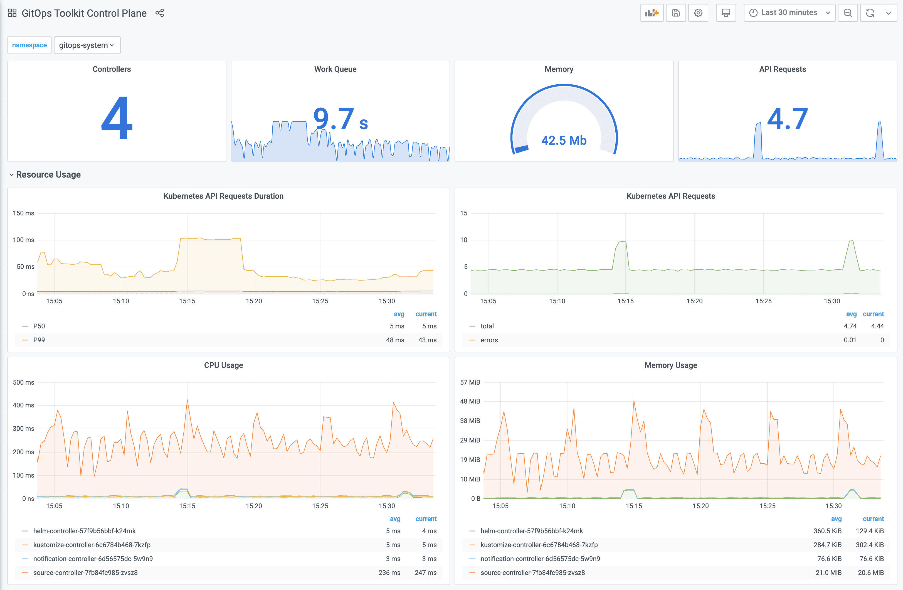
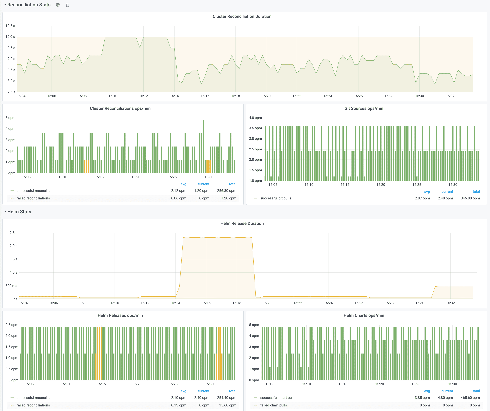

Installation¶
This guide walks you through setting up the GitOps Toolkit to manage one or more Kubernetes clusters.
Prerequisites¶
You will need a Kubernetes cluster version 1.16 or newer and kubectl version 1.18 or newer.
Install the toolkit CLI¶
With Homebrew:
brew tap fluxcd/tap
brew install gotk
With Bash:
curl -s https://toolkit.fluxcd.io/install.sh | sudo bash
# enable completions in ~/.bash_profile
. <(gotk completion bash)
Command-line completion for zsh, fish, and powershell
are also supported with their own sub-commands.
Binaries for macOS and Linux AMD64/ARM are available for download on the release page.
Verify that your cluster satisfies the prerequisites with:
gotk check --pre
Bootstrap¶
Using the gotk bootstrap command you can install the toolkit on a Kubernetes cluster
and configure it to manage itself from a Git repository.
The bootstrap creates a Git repository if one doesn't exist and commits the toolkit components manifests to the main branch. Then it configures the target cluster to synchronize with that repository by setting up SSH deploy keys.
If the toolkit components are present on the cluster, the bootstrap command will perform an upgrade if needed. The bootstrap is idempotent, it's safe to run the command as many times as you want.
You can choose what components to install and for which cluster with:
gotk bootstrap <GIT-PROVIDER> \
--components=source-controller,kustomize-controller,helm-controller,notification-controller \
--path=my-cluster \
--version=latest
ARM
When deploying to a Kubernetes cluster with ARM architecture,
you can use --arch=arm for ARMv7 32-bit container images
and --arch=arm64 for ARMv8 64-bit container images.
If you wish to install a specific version, use the toolkit
release tag e.g. --version=v0.0.14.
With --path you can configure the directory which will be used to reconcile the target cluster.
To control multiple clusters from the same Git repository, you have to set a unique path per
cluster e.g. staging-cluster and production-cluster:
├── staging-cluster # <- path=staging-cluster
│ └── gotk-system # <- namespace dir generated by bootstrap
│ ├── toolkit-components.yaml
│ ├── toolkit-kustomization.yaml
│ └── toolkit-source.yaml
└── production-cluster # <- path=production-cluster
└── gotk-system
Change the default branch
If you wish to change the branch to something else than main, create the repository manually,
push a branch to origin and then use gotk bootstrap <GIT-PROVIDER> --branch=your-branch.
GitHub and GitHub Enterprise¶
Generate a personal access token
that can create repositories by checking all permissions under repo.
Export your GitHub personal access token as an environment variable:
export GITHUB_TOKEN=<your-token>
Run the bootstrap for a repository on your personal GitHub account:
gotk bootstrap github \
--owner=my-github-username \
--repository=my-repository \
--path=my-cluster \
--personal
Run the bootstrap for a repository owned by a GitHub organization:
gotk bootstrap github \
--owner=my-github-organization \
--repository=my-repository \
--team=team1-slug \
--team=team2-slug \
--path=my-cluster
When you specify a list of teams, those teams will be granted maintainer access to the repository.
To run the bootstrap for a repository hosted on GitHub Enterprise, you have to specify your GitHub hostname:
gotk bootstrap github \
--hostname=my-github-enterprise.com \
--owner=my-github-organization \
--repository=my-repository \
--branch=main \
--path=my-cluster
GitLab and GitLab Enterprise¶
Generate a personal access token that grants complete read/write access to the GitLab API.
Export your GitLab personal access token as an environment variable:
export GITLAB_TOKEN=<your-token>
Run the bootstrap for a repository on your personal GitLab account:
gotk bootstrap gitlab \
--owner=my-gitlab-username \
--repository=my-repository \
--branch=master \
--path=my-cluster \
--personal
Run the bootstrap for a repository owned by a GitLab group:
gotk bootstrap gitlab \
--owner=my-gitlab-group \
--repository=my-repository \
--branch=master \
--path=my-cluster
To run the bootstrap for a repository hosted on GitLab on-prem or enterprise, you have to specify your GitLab hostname:
gotk bootstrap gitlab \
--hostname=my-gitlab.com \
--owner=my-gitlab-group \
--repository=my-repository \
--branch=master \
--path=my-cluster
Generic Git Server¶
For other Git providers such as Bitbucket, Gogs, Gitea, etc you can manually setup the repository and the deploy key.
Create a Git repository and clone it locally:
git clone ssh://<host>/<org>/my-repository
cd my-repository
Create a directory inside the repository:
mkdir -p ./my-cluster/gotk-system
Generate the toolkit manifests with:
gotk install --version=latest \
--arch=amd64 \ # on ARM64/AARCH64 clusters use --arch=arm64
--export > ./my-cluster/gotk-system/toolkit-components.yaml
If your cluster must pull images from a private container registry, first you should pull the toolkit images from GitHub Container Registry and push them to your registry, for example:
docker pull ghcr.io/fluxcd/source-controller:v0.0.14
docker tag ghcr.io/fluxcd/source-controller:v0.0.14 registry.internal/fluxcd/source-controller:v0.0.14
docker push registry.internal/fluxcd/source-controller:v0.0.14
Create the pull secret in the gotk-system namespace:
kubectl create ns gotk-system
kubectl -n gotk-system create secret generic regcred \
--from-file=.dockerconfigjson=/.docker/config.json \
--type=kubernetes.io/dockerconfigjson
Set your registry domain, and the pull secret when generating the manifests:
gotk install --version=latest \
--registry=registry.internal/fluxcd \
--image-pull-secret=regcred \
--export > ./my-cluster/gotk-system/toolkit-components.yaml
Commit and push the manifest to the master branch:
git add -A && git commit -m "add toolkit manifests" && git push
Apply the manifests on your cluster:
kubectl apply -f ./my-cluster/gotk-system/toolkit-components.yaml
Verify that the toolkit controllers have started:
gotk check
Create a GitRepository object on your cluster by specifying the SSH address of your repo:
gotk create source git gotk-system \
--url= ssh://<host>/<org>/my-repository \
--ssh-key-algorithm=ecdsa \
--ssh-ecdsa-curve=p521 \
--branch=master \
--interval=1m
You will be prompted to add a deploy key to your repository. If you don't specify the SSH algorithm, then gotk will generate an RSA 2048 bits key.
If your Git server supports basic auth, you can set the URL to HTTPS and specify the credentials with:
gotk create source git gotk-system \
--url=https://<host>/<org>/my-repository \
--username=my-username \
--password=my-password \
--branch=master \
--interval=1m
Create a Kustomization object on your cluster:
gotk create kustomization gotk-system \
--source=gotk-system \
--path="./my-cluster" \
--prune=true \
--interval=10m
Export both objects, commit and push the manifests to Git:
gotk export source git gotk-system \
> ./my-cluster/gotk-system/toolkit-source.yaml
gotk export kustomization gotk-system \
> ./my-cluster/gotk-system/toolkit-kustomization.yaml
git add -A && git commit -m "add toolkit reconciliation" && git push
To upgrade the toolkit to a newer version, run the install command and commit the changes:
gotk install --version=latest \
--export > ./my-cluster/gotk-system/toolkit-components.yaml
git add -A && git commit -m "update toolkit" && git push
The source-controller will pull the changes on the cluster, then the kustomize-controller will perform a rolling update of all toolkit components including itself.
Dev install¶
For testing purposes you can install the toolkit without storing its manifests in a Git repository.
Here is the equivalent to fluxctl install:
gotk install \
--components=source-controller,kustomize-controller
Then you can register Git repositories and reconcile them on your cluster:
gotk create source git podinfo \
--url=https://github.com/stefanprodan/podinfo \
--tag-semver=">=4.0.0" \
--interval=1m
gotk create kustomization podinfo-default \
--source=podinfo \
--path="./kustomize" \
--prune=true \
--validation=client \
--interval=10m \
--health-check="Deployment/podinfo.default" \
--health-check-timeout=2m
Here is the equivalent to helm install helm-operator:
gotk install \
--components=source-controller,kustomize-controller,helm-controller
Then you can register Helm repositories and create Helm releases:
gotk create source helm stable \
--interval=1h \
--url=https://kubernetes-charts.storage.googleapis.com
gotk create helmrelease sealed-secrets \
--interval=1h \
--release-name=sealed-secrets \
--target-namespace=gotk-system \
--source=HelmRepository/stable \
--chart=sealed-secrets \
--chart-version="1.10.x"
Monitoring with Prometheus and Grafana¶
The GitOps Toolkit comes with an optional monitoring stack.
You can install the stack in the gotk-system namespace with:
kustomize build github.com/fluxcd/toolkit/manifests/monitoring | kubectl apply -f-
The monitoring stack is composed of:
- Prometheus server - collects metrics from the toolkit controllers and stores them for 2h
- Grafana dashboards - displays the control plane resource usage and reconciliation stats


If you wish to use your own Prometheus and Grafana instances, then you can import the dashboards from GitHub.
Hint
Note that the toolkit controllers expose the /metrics endpoint on port 8080.
When using Prometheus Operator you should create PodMonitor objects to configure scraping.
When Prometheus is running outside of the gotk-system namespace, you have to create a network policy
that allows traffic on port 8080 from the namespace where Prometheus is deployed.
Uninstall¶
You can uninstall the toolkit components with:
gotk uninstall --crds
The above command will delete the toolkit custom resources definitions, the controllers and the namespace where they were installed.